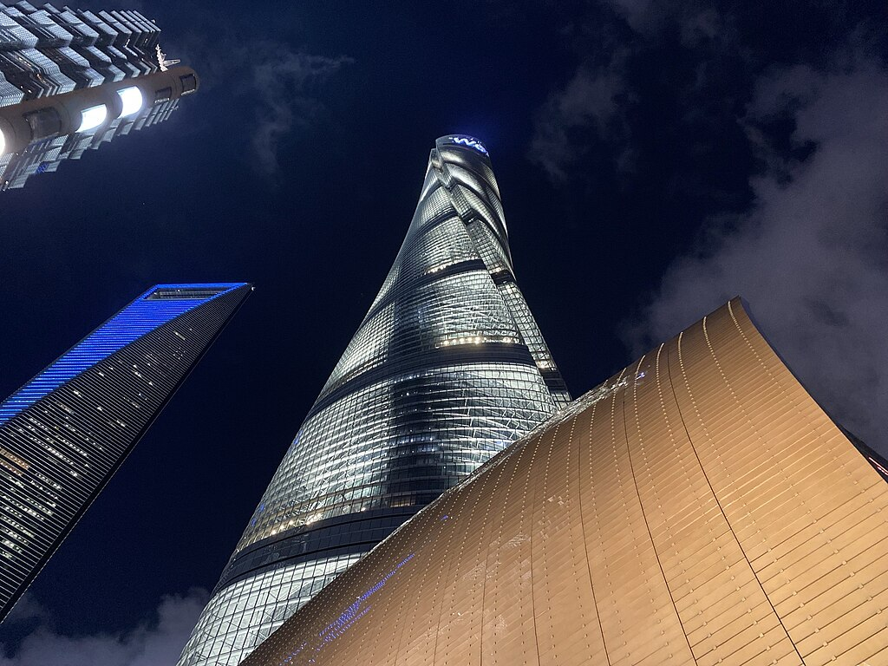
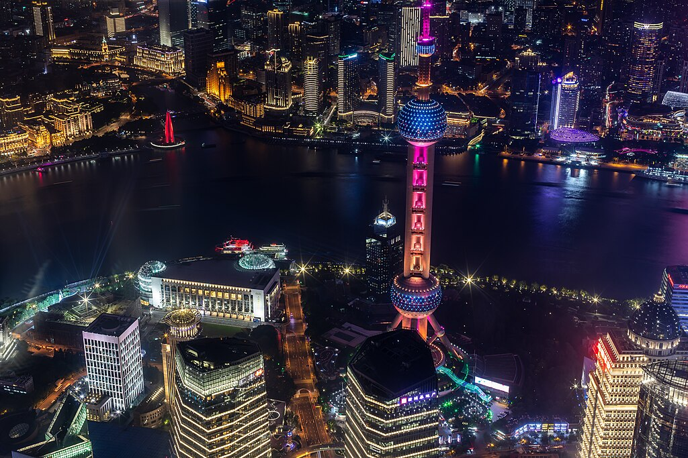

Shanghai Tower (chiń. 上海中心大厦; pinyin Shànghǎi Zhōngxīn Dàshà) – wieżowiec znajdujący się w dzielnicy Pudong w Szanghaju w bezpośrednim sąsiedztwie Jin Mao oraz SWFC. Budowa zaczęła się w 2008 r. jej zakończenie zaplanowano na rok 2015, ostatecznie budynek został oddany do użytku w roku 2017. Inwestorem oraz wykonawcą jest Shanghai Tower Construction & Development Co., Ltd. reprezentująca trzy firmy: Shanghai Chengtou Corp., Luijiazui Finance & Trade Zone Development Co., Ltd., oraz Shanghai Construction Group. Wieżowiec zaprojektowało biuro architektoniczne Gensler. Koszt budowy wyniósł 2,4 mld $.
